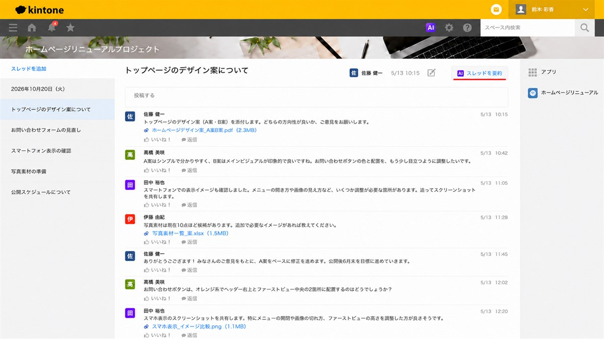
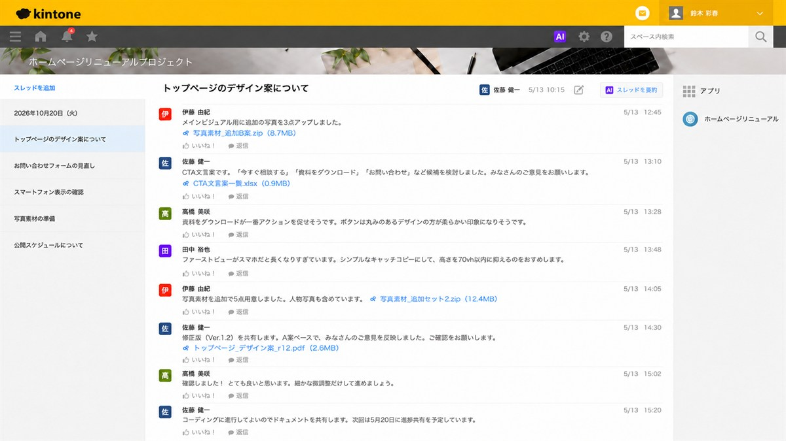
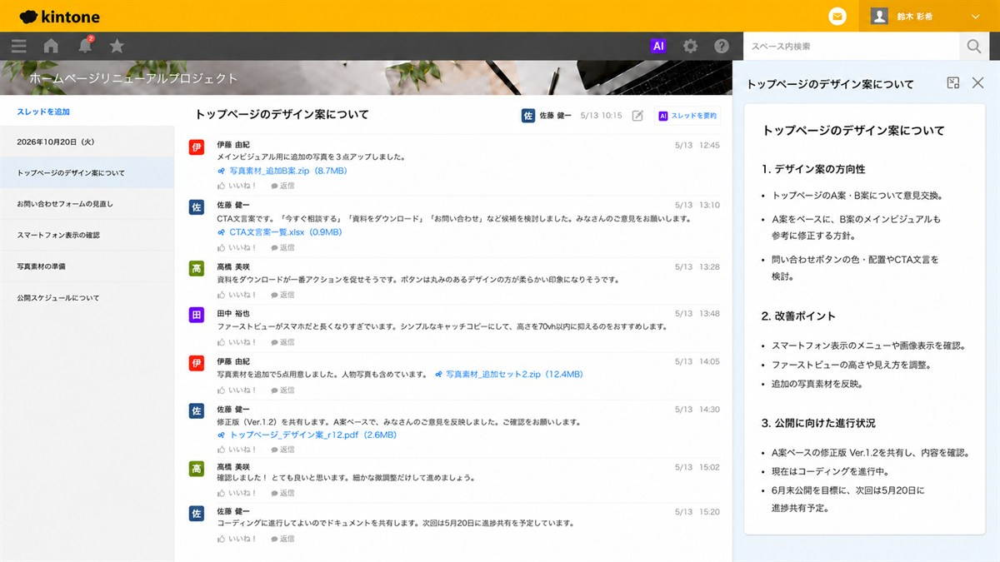

kintoneのスペース内で意見交換を続けていると、いつの間にかスレッドが長くなっていませんか？
そんなときに役立つのが「スレッド要約AI」。長いやり取りをAIが整理し、要点をまとめて確認できます。
実際の画面とともにご紹介します。
はじめに
kintoneのスペース（チーム単位で必要なコミュニケーションやアプリを集約できる機能）内でプロジェクトの進捗を共有したり、
メンバー同士で意見を交わしたりしていると、いつの間にかスレッドが長くなっていることはありませんか？
やり取りが増えてくると、
「結局、何が決まったの？」
「今はどこまで進んでいる？」
「久しぶりに見たら、話についていけない……」
と感じることもあります。
そんなときに活用できるのが、kintoneの「スレッド要約AI」です。スレッド内に投稿されたやり取りをAIが整理し、重要なポイントをまとめて確認できます。
今回は、ホームページリニューアルプロジェクトのスレッドを例に、長くなったやり取りがどのように要約されるのか、実際の画面を見ながらご紹介します。
kintoneの「スレッド要約AI」とは？
スレッド要約AIは、kintoneのスペース内でスレッドに投稿されたコメントをAIが読み取り、重要な内容を整理して表示する機能です。
プロジェクトについて複数のメンバーが意見を交わしていると、話題が増えたり、途中で新しい検討事項が加わったりすることがあります。その結果、次のような情報がスレッドの中に分散していきます。
- 何について話し合ったのか
- どのような方針になったのか
- どこを改善するのか
- 現在どこまで進んでいるのか
スレッド要約AIを活用すると、長いやり取りを最初からすべて読み返す前に、まず全体のポイントを確認できます。それでは、実際に使ってみましょう。
実際にスレッド要約AIを使ってみました
今回使用するのは、ホームページリニューアルプロジェクトの中にある、「トップページのデザイン案について」というスレッドです。
まずは「スレッドを要約」をクリック
使い方はとてもシンプルです。要約したいスレッドを開き、画面右上にある「スレッドを要約」をクリックします。

特別な設定や複雑な操作は不要で、要約したいスレッドから直接操作できるため、AIに詳しくない方でも使い方をイメージしやすいのではないでしょうか。
要約前のスレッドを見てみると……
今回のスレッドでは、複数のメンバーがホームページのトップページについて意見交換をしています。
話し合っている内容はデザイン案だけではありません。A案とB案の比較から始まり、お問い合わせボタンの色や配置、スマートフォンでの見え方、写真素材の準備、CTA文言の検討、修正版デザインの確認、コーディングの進行、公開までのスケジュールなど、プロジェクトが進むにつれて話題も増えていきます。

このように投稿が増えたスレッドでは、全体の流れを把握するのに時間がかかることがあります。
途中から参加した人や、しばらく確認していなかった人にとっては、「A案とB案のどちらで進めるのか」「どこを改善するのか」「今はどの段階なのか」を確認するために、過去の投稿を一つずつ読み返す必要が出てくることもあります。
そこで役立つのが、スレッド要約AIです。
AIによる要約結果を確認
「スレッドを要約」を実行すると、画面の右側に要約結果が表示されます。

今回のスレッドでは、長いやり取りが大きく3つの内容に整理されました。
1．デザイン案の方向性
A案とB案についての意見交換や、どのような方向で修正を進めていくのかが整理されています。一つひとつの投稿を読み返さなくても、デザインの方向性を確認しやすくなっています。
2．改善ポイント
スマートフォン表示の確認、ファーストビューの見え方、追加する写真素材など、改善する内容がまとめられています。複数の投稿に分かれていた改善点が一つに整理されるため、「これから何を直すのか」を把握しやすくなります。
3．公開に向けた進行状況
修正版の確認や現在の作業状況、公開目標、次回の進捗共有予定などが整理されています。これまでの検討内容だけでなく、プロジェクトの現在地も確認しやすくなっています。
このように、「スレッドを要約」をクリック → AIがやり取りを整理 → 要点をまとめて確認という流れで利用できます。
スレッド要約AIの便利なポイント
スレッド要約AIは、単に文章を短くする機能ではなく、長くなったやり取りを確認しやすくするために活用できます。どのような場面で役立つのかを見ていきましょう。
長いやり取りの全体像をつかみやすい
プロジェクトが進むと、一つのスレッドの中でもさまざまな話題が出てきます。AIが整理することで全体の内容をつかみやすくなり、まず要約で全体像を確認し、気になる部分があれば元の投稿を詳しく読む、という使い方もできます。
途中から参加したメンバーの確認にも
担当者が変わったり、新しいメンバーが加わったりしたとき、それまでのスレッドを最初からすべて読むのは大変です。「どのような話し合いがあったのか」「現在はどこまで進んでいるのか」を確認する手掛かりになり、新しいメンバーが流れを把握するときにも活用しやすいでしょう。
久しぶりに確認するプロジェクトにも便利
複数のプロジェクトを同時に進めていると、しばらく確認していなかったスレッドを久しぶりに開くこともあります。「前回はどこまで進んでいたか」「次に何をする予定だったか」を、過去の投稿を探さずに振り返るきっかけになります。
情報共有にかかる負担の軽減にも
新しいメンバーが入るたびに経緯を一から説明するのは負担になります。要約結果を確認してもらい、必要な部分を補足するようにすれば、情報共有を進めやすくなります。上司や関係部署から「このプロジェクト、今どうなっているの？」と聞かれたときの整理にも役立ちます。
こんな場面で活用できそうです
スレッド要約AIは、今回ご紹介したホームページ制作だけでなく、さまざまな業務での活用が考えられます。たとえば、次のような場面です。
- プロジェクトの進捗共有 複数の担当者から報告や相談が投稿されるプロジェクトで、これまでの流れを確認するときに役立ちます。
- 会議後の意見交換 会議後もスレッド上で意見交換が続いた場合に、どのような意見が出たのかを整理する際に活用できます。
- Webサイト制作や商品開発 デザイン・機能・素材・スケジュールなど、複数のテーマが同時に進む業務と相性がよいでしょう。
- 営業案件の情報共有 複数のメンバーが顧客情報や対応状況を書き込む場合に、それまでの経緯を確認するために活用できます。
- 部署をまたぐ社内プロジェクト 参加人数が増えるほど情報量も多くなります。途中から参加したメンバーの状況把握にも役立ちます。
kintone AIを活用して、情報共有をもっとスムーズに
kintoneを使っていると、日々の業務に関するさまざまな情報が蓄積されていきます。情報が残っていることは大切ですが、情報量が増えるほど「必要な内容を探す」「過去の流れを読み返す」「途中参加した人に説明する」といった作業に時間がかかることもあります。
スレッド要約AIは、こうしたやり取りをAIで整理し、内容を確認しやすくするために活用できる機能です。kintoneに情報を残すだけでなく、必要なときにはAIを使って内容を整理する。これも、kintone AI活用の一つの方法です。
「スレッドが長くなり、内容を追うのが大変」「プロジェクトの途中参加者への説明に時間がかかる」「kintoneに蓄積した情報をもっと活用したい」という場合は、スレッド要約AIを活用してみてはいかがでしょうか。